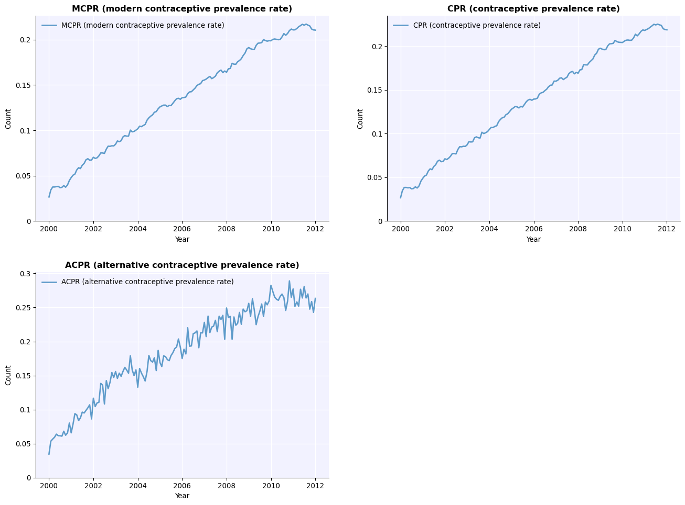
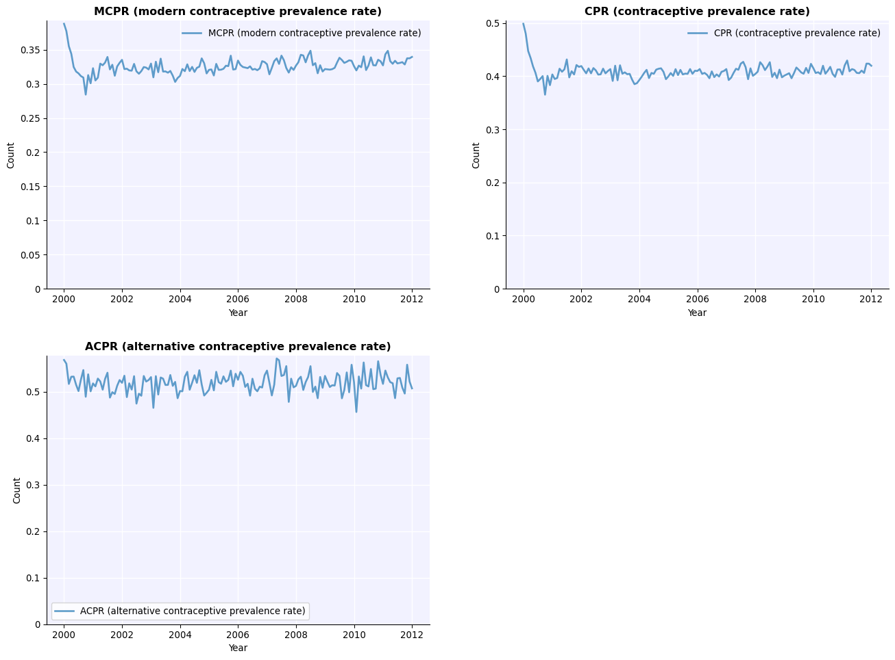

import fpsim as fp
import starsim as ss
import numpy as np
import matplotlib.pyplot as plt
pars = dict(
n_agents=2000,
start=2000,
stop=2020,
location='kenya',
verbose=0,
analyzers=fp.method_mix_over_time(),
)
intro_year = 2010 # Year when new methods will be introduced1. Basic introduction (new method + market share)
Adding a new method
This tutorial shows how to use the add_method intervention to introduce a new contraceptive method into an FPsim run at a specified year. You can use it in several ways:
- Brand new method: Define a full
fp.Methodand add it, copying switching behavior from an existing method. - Quick clone: Clone an existing method (e.g. implants) with minimal config; useful for generic “copy” scenarios.
- Clone + override: Clone a method and override specific attributes (name, efficacy, duration, etc.) via
method_pars. - Market splitting: Introduce a new method that takes a fraction of another method’s market share using
split_shares.
You always specify when the method becomes available (year) and which existing method to copy switching behavior from (copy_from). Optionally you can pass a custom method, method_pars, and/or split_shares.
Setup
Import FPsim, Starsim, and set common simulation parameters. We’ll use a small population and short run for quick demos.
The simplest use case: define a new method with fp.Method, introduce it at a given year, copy switching behavior from an existing method, and optionally take part of that method’s market share with split_shares.
# Define the new method
new_injectable = fp.Method(
name='new_inj',
label='New Injectable',
efficacy=0.995,
modern=True,
dur_use=ss.lognorm_ex(mean=3, std=1.5),
)
# Intervention: introduce in intro_year, copy from injectables, take 50% of their share
intv_basic = fp.add_method(
year=intro_year,
method=new_injectable,
copy_from='inj',
split_shares=0.50,
verbose=True,
)
sim_baseline = fp.Sim(pars=pars, label='Baseline').run()
sim_basic = fp.Sim(pars=pars, interventions=[intv_basic], label='With New Injectable').run()
print(f"Baseline mCPR: {sim_baseline.results.contraception.mcpr[-1]*100:.1f}%")
print(f"With new method mCPR: {sim_basic.results.contraception.mcpr[-1]*100:.1f}%")Loading data from files in /home/cliffk/idm/fpsim/fpsim/locations/kenya/data...
Applying calibration parameters for kenya...
Loading data from files in /home/cliffk/idm/fpsim/fpsim/locations/kenya/data...
Applying calibration parameters for kenya...
Registered new method "new_inj" (idx=10), will activate in year 2010
Activating new contraceptive method "new_inj" in year 2010.0
add_method finalized: "new_inj" has 38 users (3.80% of method mix)
Baseline mCPR: 47.0%
With new method mCPR: 47.2%2. Quick clone (copy existing method)
Add a copy of an existing method without defining a full Method: omit method and use copy_from. The new method is named {source}_copy unless you override it in method_pars.
intv_clone = fp.add_method(
year=intro_year,
copy_from='impl',
verbose=True,
)
sim_clone = fp.Sim(pars=pars, interventions=[intv_clone], label='With Implant Clone').run()Loading data from files in /home/cliffk/idm/fpsim/fpsim/locations/kenya/data...
Applying calibration parameters for kenya...
Registered new method "impl_copy" (idx=10), will activate in year 2010
Activating new contraceptive method "impl_copy" in year 2010.0
add_method finalized: "impl_copy" has 111 users (12.08% of method mix)3. Clone + override with improved contraceptive technology
Clone an existing method and override specific attributes via method_pars. In this next example we introduce an improved injectable with higher efficacy and a 10% longer relative duration of use.
intv_override = fp.add_method(
year=intro_year,
copy_from='inj',
method_pars={
'name': 'inj_improved',
'label': 'Improved Injectable',
'efficacy': 0.998,
'rel_dur_use': 1.1
},
)
sim_override = fp.Sim(pars=pars, interventions=[intv_override], label='With Improved Injectable').run()Loading data from files in /home/cliffk/idm/fpsim/fpsim/locations/kenya/data...
Applying calibration parameters for kenya...
Registered new method "inj_improved" (idx=10), will activate in year 2010
Activating new contraceptive method "inj_improved" in year 2010.0
add_method finalized: "inj_improved" has 47 users (5.18% of method mix)Alternative: Adding methods from simulation startThe examples above use the add_method intervention to introduce methods partway through a simulation. If you need a method to be available from the very beginning of the simulation, use the manual method creation approach below.
First, make a copy of the default list of contraceptive methods:
my_methods = fp.make_methods()Define a new method with its attributes:1. A simple name (used inside the code)2. Efficacy (as a decimal)3. Whether it is a modern method4. Duration of use (in months or as a distribution)5. A label (used in plots)
new_method = fp.Method(name='new', efficacy=0.96, modern=True, dur_use=15, label='New method')Add the method to the list:
my_methods += new_methodCreate a method choice module that includes your new method:
method_choice = fp.RandomChoice(methods=my_methods)Now run simulations comparing baseline (without the new method) to a scenario with the new method:
pars = dict(
n_agents = 10_000,
location = 'senegal',
start = 2000,
stop = 2012,
exposure_factor = 1.0 # Overall scale factor on probability of becoming pregnant
)
s1 = fp.Sim(pars=pars, label='Baseline')
s2 = fp.Sim(pars=pars, contraception_module=method_choice, label='New Method')
msim = ss.MultiSim(sims=[s1, s2])
msim.run()Loading data from files in /home/cliffk/idm/fpsim/fpsim/locations/senegal/data...
Applying calibration parameters for senegal...
Loading data from files in /home/cliffk/idm/fpsim/fpsim/locations/senegal/data...
Applying calibration parameters for senegal...
Initializing sim "Baseline" with 10000 agents
Initializing sim "New Method" with 10000 agents
Running "Baseline": 2000.01.01 ( 0/145) (0.00 s) ———————————————————— 1%
Running "New Method": 2000.01.01 ( 0/145) (0.00 s) ———————————————————— 1%
Running "New Method": 2001.01.01 (12/145) (0.10 s) •——————————————————— 9%
Running "Baseline": 2001.01.01 (12/145) (0.12 s) •——————————————————— 9%
Running "New Method": 2002.01.01 (24/145) (0.22 s) •••————————————————— 17%
Running "Baseline": 2002.01.01 (24/145) (0.27 s) •••————————————————— 17%
Running "New Method": 2003.01.01 (36/145) (0.34 s) •••••——————————————— 26%
Running "Baseline": 2003.01.01 (36/145) (0.43 s) •••••——————————————— 26%
Running "New Method": 2004.01.01 (48/145) (0.48 s) ••••••—————————————— 34%
Running "Baseline": 2004.01.01 (48/145) (0.60 s) ••••••—————————————— 34%
Running "New Method": 2005.01.01 (60/145) (0.61 s) ••••••••———————————— 42%
Running "New Method": 2006.01.01 (72/145) (0.74 s) ••••••••••—————————— 50%
Running "Baseline": 2005.01.01 (60/145) (0.77 s) ••••••••———————————— 42%
Running "New Method": 2007.01.01 (84/145) (0.87 s) •••••••••••————————— 59%
Running "Baseline": 2006.01.01 (72/145) (0.94 s) ••••••••••—————————— 50%
Running "New Method": 2008.01.01 (96/145) (1.00 s) •••••••••••••——————— 67%
Running "Baseline": 2007.01.01 (84/145) (1.12 s) •••••••••••————————— 59%
Running "New Method": 2009.01.01 (108/145) (1.14 s) •••••••••••••••————— 75%
Running "New Method": 2010.01.01 (120/145) (1.28 s) ••••••••••••••••———— 83%
Running "Baseline": 2008.01.01 (96/145) (1.30 s) •••••••••••••——————— 67%
Running "New Method": 2011.01.01 (132/145) (1.42 s) ••••••••••••••••••—— 92%
Running "Baseline": 2009.01.01 (108/145) (1.48 s) •••••••••••••••————— 75%
Running "New Method": 2012.01.01 (144/145) (1.56 s) •••••••••••••••••••• 100%
Running "Baseline": 2010.01.01 (120/145) (1.67 s) ••••••••••••••••———— 83%
Running "Baseline": 2011.01.01 (132/145) (1.86 s) ••••••••••••••••••—— 92%
Running "Baseline": 2012.01.01 (144/145) (2.06 s) •••••••••••••••••••• 100%
MultiSim("Baseline"; n_sims: 2; base: Sim(Baseline; n=10000; 2000—2012; demographics=deaths; connectors=contraception, edu, fp))Compare the contraceptive prevalence rate between the two scenarios:
msim.plot(key='cpr');Figure(1536x960)
